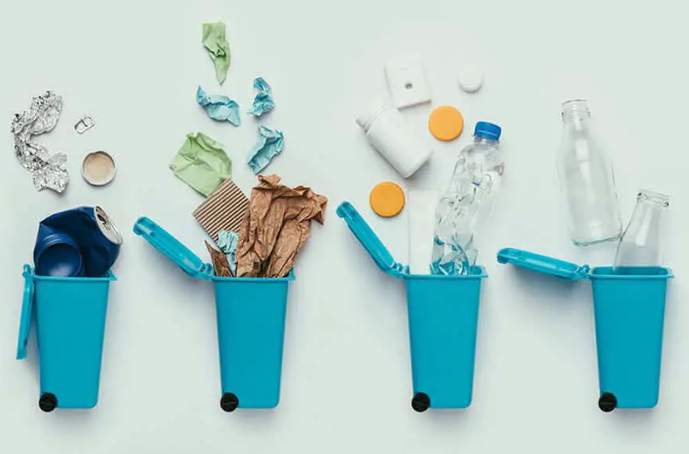

Grenergy Editorial Research
Published February 1, 2024
Different materials require different protocol in methods to dispose of them and it's imperative that we adhere to such procedure.
Recycling is something commonly heard around the world as a way to save our environment. However, many might not take this solution as seriously as it should be. So, here are 4 ways you can maintain a clean environment so YOU and the WORLD can be happy.
Remember to read your local trash/waste pickup companies guidelines and recycling policies. A violation of the policy could lead to a whole batch of recycled goods to get thrown out instead.
Consider using things like reusable water bottles to limit the amount of plastic bottles purchased and used. You can also opt to buy goods created from recycled products, like paper plates made from recycled paper and cardboard.
The next time you have an orange or a banana, keep the peels, chop them up, and store them in a container. You could also throw in some coffee grounds and eggshells. Once the container is full, dump it out in your garden and cover it with soil or leaves. Overtime, this waste will decompose and “feed” your garden.
To remind yourself to recycle products, you could keep a special designated “Recycling bin” near your regular trash bin. Now, there’s no other excuse to throw a perfect piece of cardboard or plastic.